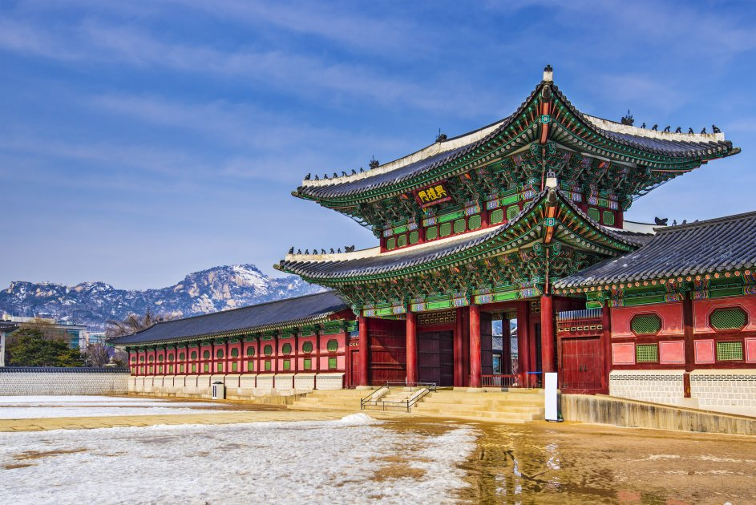
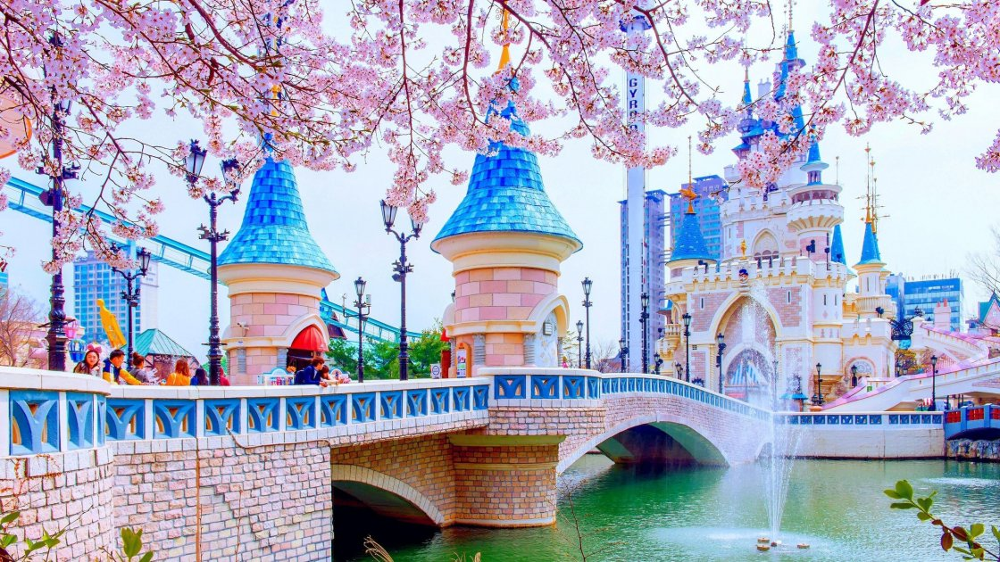
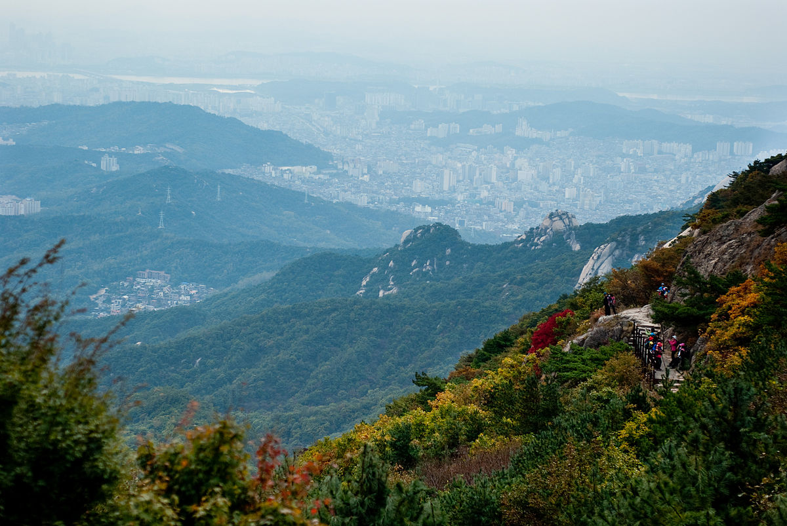

Південна Корея
Куди поїхати в Кореї?
Палац Кенбоккун 
Палацовий комплекс Кенбоккун розташований у північній частині міста. Він був споруджений наприкінці XIV століття за правління династії Чосон. До складу комплексу входять тронний зал Кінджонджон, павільйон Кенхверу, Національний етнографічний музей Кореї та Національний палацовий музей. Щодня біля центральних воріт комплексу відбувається церемонія зміни варти, на яку приїжджають помилуватися багато туристів.
Парк Лотте Ворлд 
«Лотте Ворлд» – найбільший критий парк розваг у світі, в якому на вас чекає масса атракціонів. Щоб покататися на всіх, не вистачить навіть тижня. Якщо ж і цього недостатньо, тут ви також знайдете гігантський торговий центр і універмаг. Лотте Ворлд – визначна пам'ятка, яка особливо популярна у місцевих жителів.
Національний парк Пукхансан 
Любителі природи неодмінно повинні побувати в Пукхансані - національному парку, багатому на дивовижні ліси і красиві храми. Він також відомий трьома гірськими вершинами: Мангенде, Інсубонг і Бегунде. Усі вони ідеально підходять для піших прогулянок. Панорама Сеула, що відкривається звідти, справляє приголомшливе враження.